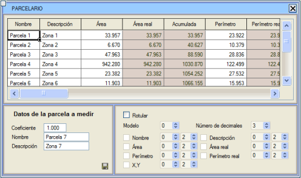
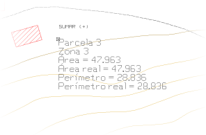
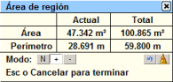
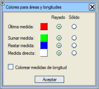
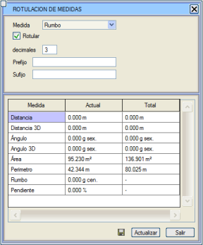
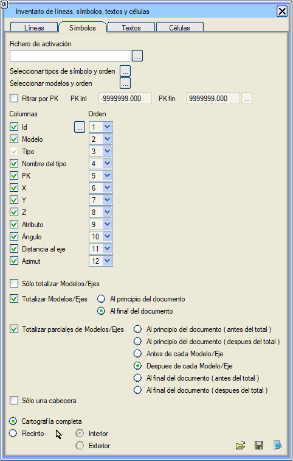

| |
|
ÖLÇÜMLER
|
Genel Bilgiler ISTRAM®/ISPOL®, kullanıcıya uzunluk, alan ve açı ölçümü için kapsamlı bir araç sunar. Başlamadan önce, programın hem bu bölümde hem de uygulamanın geri kalanında elde edilen açısal birimler hakkında nasıl bilgi vereceği modunun yapılandırmasını bilmenin gerekliliğini vurgulamak gerekir. Kullanıcıya, bu yapılandırmanın Yapılandırma → Tercihler → Açısal Birimler menüsünden ayarlandığı hatırlatılır.  Açı elde etme ve ölçme seçenekleri, altmışlık (derece), gradyan (grad) veya radyan cinsinden açılarla çalışmaya olanak tanır. Aynı zamanda, açıların ölçüm başlangıcını ve ölçüm yönünü seçme imkanı sunar.  Ölçümler menüsüne Araçlar → Ölçümler'den erişilebilir. Ayrıca, klavyeden <x> (küçük x) komutu girilirse, yapılan son ölçüm türü için ölçüm aracı açılır (eğer daha önce hiç ölçüm yapılmamışsa, görünen ölçüm türü bölge alanı ölçümüdür). Ölçümler menüsüne Araçlar → Ölçümler'den erişilebilir. Ayrıca, klavyeden <x> (küçük x) komutu girilirse, yapılan son ölçüm türü için ölçüm aracı açılır (eğer daha önce hiç ölçüm yapılmamışsa, görünen ölçüm türü bölge alanı ölçümüdür).Ölçüm aracı açıkken, farenin sağ tuşuyla açılan içerik menüsü, o an yapılmakta olan ölçüm türüyle ilgili, sonraki bölümlerde diğerleriyle birlikte açıklanan çeşitli seçenekleri bir kısayol olarak sunar.
Uzunluk ölçümleri yapılıyorsa, içerik menüsünde kullanımı kolaylaştırmak için mevcut yakalama modları da gösterilir. Alan Ölçümü Olasılıklar şunlardır:
Parselasyon Aracı Araçlar → Ölçümler → Parselasyon menüsünden erişilebilen bu küçük araç, çizgilerin, kapalı alanların ve kapalı bölgelerin kısmi ve kümülatif alan ve çevre ölçümlerini yapmayı, bu ölçümleri manuel olarak değiştirmeyi ve kapalı alanları basit bir parselasyon aracı olarak tanımlamayı sağlar. 
Her parsel bir ad ve bir açıklama ile tanımlanır ve ayrıca ölçülen alana uygulanacak 1'den farklı bir katsayı atanabilir. Bu katsayı, ölçüm alınmadan önce Ölçülecek parselin verileri bölümünde ayarlanmalıdır. Araç ayrıca alan ve çevrenin doğrudan değiştirilmesine olanak tanır, kullanıcı istediği değeri ayarlayabilir. Bu şekilde, alan ve çevre, katsayıdan etkilenen ve/veya manuel olarak değiştirilen değerler olurken, gerçek alan ve çevre çizim üzerinde gerçekten ölçülen değerlerdir. Her ölçüm alındığında, parsel verilerini çizim üzerine etiketlemek mümkündür. Etiketle kutucuğunu etkinleştirmek ve bu etiketlemenin yapılacağı modeli ve alınan ölçümlerin ondalık basamak sayısını belirtmek yeterlidir. Etiketlenebilecek veriler arasında, ölçülmek istenen parseli seçerken tıklanan koordinatlar (X,Y) da bulunur. Bu koordinat ayrıca parselasyon tablosunda da gösterilir ve parselasyon aracından oluşturulan .res dosyasına da yazılabilir. Etiketlenecek her veri için, kullanılacak metin tipini ve yüksekliğini de ayarlamak mümkündür. Son olarak, yapılan parselasyonun bir listesi alınmak istenirse,  butonuna basılmalıdır. O zaman, sadece listeye geçmesi istenen verilerin işaretlenmesi gereken bir iletişim kutusu açılır ve tercihler kabul edildikten sonra, parselasyon verilerini içeren .res uzantılı dosyanın adı istenir. butonuna basılmalıdır. O zaman, sadece listeye geçmesi istenen verilerin işaretlenmesi gereken bir iletişim kutusu açılır ve tercihler kabul edildikten sonra, parselasyon verilerini içeren .res uzantılı dosyanın adı istenir.Parselleri etiketlerken oluşturulan nesneler, PARSELASYON kaynağına sahip olur. Ölçüm dosyası xlsx formatında da kaydedilebilir. Uzunluk ve Yarıçap Ölçümü Aşağıdaki seçenekler mevcuttur:
Açı Ölçümü Bu durumda mevcut ölçüm olanakları şunlardır:
Bu ölçüm işlevi etkinleştirildiğinde, farenin sağ tuşuna basıldığında gösterilen içerik menüsü, diğerlerinin yanı sıra, ölçülen eğimin etiketlenmesini kişiselleştirmek için değerlerin girilebileceği bir iletişim kutusu gösteren Eğimi Etiketle... seçeneğini sunar.
Ölçüm İşlemleri Yapılan bir ölçümü anında göstermenin yanı sıra, ölçümleri biriktirmek ve bu şekilde kısmi ve toplam hesaplamalar elde etmek çok ilginçtir. ISTRAM®/ISPOL® bu sorunu çözer ve aşağıda yorumlanan ölçüm elde etmeye bazı ek işlevler ekler. Ölçümlerin Toplanması ve Çıkarılması Uygulamanın gösterdiği verilerin toplanmasını ve çıkarılmasını kolaylaştırmak amacıyla, ölçümleri toplamak, çıkarmak ve sıfırlamak için küçük bir yapılandırıcı bulunmaktadır. [+] veya [-] butonuna basıldığında, sonraki ölçülen alanlar, çevreler, uzunluklar veya açılar öncekilere eklenir veya çıkarılır; bu durumda Mevcut sütununda son ölçüm ve Toplam sütununda birikmiş ölçüm gösterilir. [N] modu ölçümleri biriktirmez. Toplama ve çıkarma seçenekleri içerik menüsünden de mevcuttur ve etkinleştirildiğinde işlem (TOPLA veya ÇIKAR) fare imlecinde gösterilir. Eğer ölçümler toplanıyor veya çıkarılıyorsa, kullanıcının yanlışlıkla, uzunluğunu veya alanını biriktirmek istemediği bir çizgiyi veya kapalı alanı işaretlemesi çok olasıdır. Toplam ölçümü sıfırlamak zorunda kalmamak için, son ölçümü içerik menüsündeki Sonuncuyu Kaldır seçeneğiyle veya ölçüm aracındaki  simgesiyle iptal etmek mümkündür. simgesiyle iptal etmek mümkündür.Bir ölçümü sıfırlamak ve mevcut ile toplam değeri sıfıra geçirmek için, içerik menüsündeki Temizle seçeneğini veya  simgesini kullanmak yeterlidir. Bu seçenek mevcut ölçüm türünü sıfırlar, ancak diğerlerini bellekte tutar; öyle ki, örneğin, bazı alan ölçümleri yapılıp uzunluk ölçümlerine geçilirse, bu butona basılsa bile, tekrar alan ölçümleri yapmaya dönüldüğünde o ölçüm türüyle sahip olunan değerler korunur. Eğer TÜM ölçümler sıfırlanmak isteniyorsa, kullanılacak seçenek Araçlar → Ölçümler → Tümünü Temizle olacaktır. simgesini kullanmak yeterlidir. Bu seçenek mevcut ölçüm türünü sıfırlar, ancak diğerlerini bellekte tutar; öyle ki, örneğin, bazı alan ölçümleri yapılıp uzunluk ölçümlerine geçilirse, bu butona basılsa bile, tekrar alan ölçümleri yapmaya dönüldüğünde o ölçüm türüyle sahip olunan değerler korunur. Eğer TÜM ölçümler sıfırlanmak isteniyorsa, kullanılacak seçenek Araçlar → Ölçümler → Tümünü Temizle olacaktır.Kullanıcının farklı alan ölçümlerini görsel olarak ayırt edebilmesi amacıyla, uygulama Araçlar → Ölçümler → Renkler... menüsünden yapılandırılabilen bir renk kodu belirler. Varsayılan olarak, program son ölçülen alan için kırmızı tarama kullanır ve öncekiler beyaz gösterilir. Eğer alanlar toplanıyor (veya çıkarılıyor) ise, toplama (veya çıkarma durumunda mavi) işlemine dahil olanlar yeşil taranmış olarak gösterilir, sonuncusu hariç, o kırmızı olarak gösterilmeye devam eder. Uzunluk ölçümlerini renklendir kutucuğu etkinleştirildiğinde, program aşağıdaki uzunluk ölçümlerini renklendirir:
İçerik menüsünden (farenin sağ tuşu) de erişilebilen Ölçümleri Görüntüle seçeneği, ekranda tüm ölçümlerin yapıldıkça yansıtıldığı ve güncellendiği bir iletişim kutusu sunar; ayrıca butonuna basılarak bir metin dosyasına kaydedilebilir.Bu menü, yapılan güzergah açısı ve eğim ölçümlerini haritaya etiketleme imkanı sunar. Bunun için, Etiketle kutucuğunu işaretlemek yeterlidir; bu, ölçümlerin etiketlenmesini yapılandırabileceğiniz bir diyalog açar ve her ölçüm için şunları içerir:
Bu seçeneği devre dışı bırakmak için, bu menüye geri dönüp onay kutusunun işaretini kaldırmak yeterlidir. Çizgi, Sembol, Metin ve Hücre Envanteri Bu araç, mevcut dosyada kullanılan çizgilerin, noktaların, metinlerin ve hücrelerin tam bir listesini elde etmeyi sağlar. Hangi verileri göstermek istediğimizi (ID, ad, KM, koordinatlar, azimut vb.), KM aralığına göre filtreleme yapabiliriz, vb. Sembol envanterine "Açı" sütunu eklenmiştir. 
|